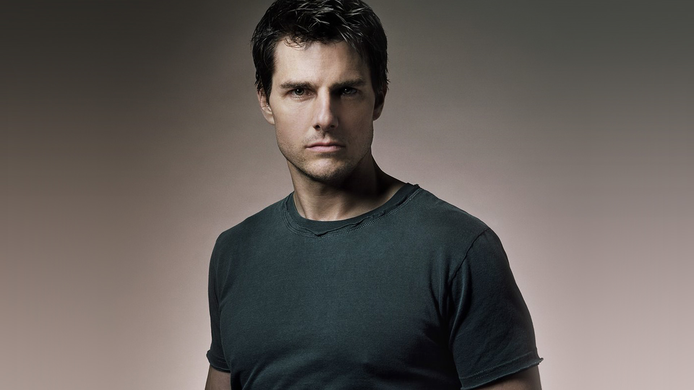

|  |
About Tom CruiseThomas Cruise Mapother IV (3 Temmuz 1962 doğumlu), profesyonel olarak Tom Cruise olarak bilinen Amerikalı aktör ve yapımcıdır. Dünyanın en yüksek maaşlı aktörlerinden biri olarak, üç Akademi Ödülü'ne aday gösterilmesinin yanı sıra Fahri Altın Palmiye ve üç Altın Küre Ödülü de dahil olmak üzere çeşitli ödüller aldı. Filmleri Kuzey Amerika'da 4 milyar doların üzerinde ve dünya çapında 11,1 milyar doların üzerinde hasılat elde ederek onu tüm zamanların en yüksek hasılat yapan gişe yıldızlarından biri yaptı. Cruise, 1980'lerin başında oyunculuğa başladı ve komedi filmi Risky Business (1983) ve aksiyon filmi Top Gun'da (1986) başrol oynayarak atılımını gerçekleştirdi. Paranın Rengi (1986), Yağmur Adam (1988) dizilerindeki rolleriyle eleştirel beğeni topladı ve Dördüncü Temmuz'da (1989) doğdu. İkincisinde Ron Koviç'i canlandırdığı için Altın Küre Ödülü kazandı ve en iyi erkek Oyuncu Akademi Ödülü'ne aday gösterildi. 1990'larda önde gelen bir Hollywood yıldızı olarak, drama dahil olmak üzere ticari olarak başarılı birçok filmde rol aldı Birkaç iyi adam (1992), gerilim filmi Firma (1993), korku filmi Vampirle Röportaj (1994) ve romantik Jerry Maguire (1996). İkincisi için en iyi erkek oyuncu dalında Altın Küre Ödülü kazandı ve ikinci Akademi Ödülü adaylığını aldı. Cruise'un dramada motivasyonel konuşmacı olarak performansı Manolya (1999) ona bir Altın Küre Ödülü ve en iyi yardımcı erkek Oyuncu Akademi Ödülü'ne aday gösterildi. O zamandan beri Cruise, büyük ölçüde bilim kurgu ve aksiyon filmlerinde rol aldı ve kendisini bir aksiyon yıldızı olarak kurdu ve genellikle kendi riskli dublörlerini yaptı. 1996'dan 2018'e kadar Mission: Impossible filmlerinin altısında da Ethan Hunt'ı canlandırdı. Türdeki diğer önemli rolleri arasında Vanilya Gökyüzü (2001), Azınlık Raporu (2002), Son Samuray (2003), Teminat (2004), Dünyalar Savaşı (2005), Şövalye ve Gün (2010), Jack Reacher (2012), Unutulma (2013), Kenar Yarın (2014) ve Top Gun: Maverick (2022), Maverick en yüksek hasılat yapan filmi oldu. Cruise, aktrisler Mimi Rogers, Nicole Kidman ve Katie Holmes ile evlendi. |